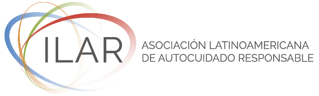

Configura su perfil
Nos indica en qué países opera, qué categorías de producto maneja (medicamentos, dispositivos médicos, alimentos, cosmética, suplementos…) y qué palabras clave son críticas para su operación.
Monitoreamos las agencias regulatorias, los ministerios de salud y los boletines oficiales de Latinoamérica por usted. Cada semana recibe solo la información que impacta a sus productos y a los países donde opera, con su prioridad y la acción recomendada.
Hoy alguien de su equipo revisa los boletines de varias agencias, en varios países, todas las semanas. Es un proceso lento y manual, y aun así un cambio de rotulado, una nueva exigencia o el retiro de un producto pueden pasar inadvertidos. Cuando eso ocurre, el costo no es solo tiempo: son multas, reprocesos o producto detenido en aduana.
Nos indica en qué países opera, qué categorías de producto maneja (medicamentos, dispositivos médicos, alimentos, cosmética, suplementos…) y qué palabras clave son críticas para su operación.
Cada día, agentes de inteligencia artificial revisan las fuentes oficiales de Latinoamérica —agencias regulatorias, ministerios de salud, boletines oficiales, medios especializados y organismos internacionales— y conservan solo lo que coincide con su perfil, aplicando el filtrado según el perfil que usted define.
Recibe un informe semanal en su bandeja de entrada: cada alerta con su prioridad, su nivel de impacto y la acción recomendada. Listo para asignar tareas.
Alta, media o baja, para saber por dónde empezar.
Un puntaje de 1 a 10 que ordena las alertas según cuánto afectan a su operación.
Qué área de la empresa involucra (Regulatorio, Calidad, Legales…).
El próximo paso concreto a seguir.
Qué puede ocurrir si no se toma ninguna acción.
Cuando existe una duda, la alerta se marca para que la valide una persona. El criterio final es suyo.
Y otras fuentes de la región. ¿No ve su país? Escríbanos — estamos sumando fuentes.
Nuestro foco actual es el sector salud y los productos regulados. La plataforma puede adaptarse a otras industrias según su necesidad.
Filtra por sus países, categorías y palabras clave. Sin ruido genérico.
Se configuran según los países, categorías y palabras clave de cada cliente para filtrar y priorizar la información.
Prioridad, impacto, áreas afectadas, acción y riesgo en cada alerta.
Informe semanal en su bandeja de entrada, sin que nadie tenga que ir a buscarlo.
Una IA de propósito general puede ayudar a redactar o resumir, pero no fue pensada para vigilar información regulatoria oficial de forma sistemática. Oversia sí.
Oversia nos permite seguir de cerca los cambios regulatorios de toda la región sin depender de la revisión manual de cada boletín. La priorización y el contexto de cada alerta nos ayudan a actuar a tiempo y a mantener informados a nuestros asociados.

Agende una demostración de 20 minutos. Le mostramos cómo se vería su informe semanal con su propio perfil.